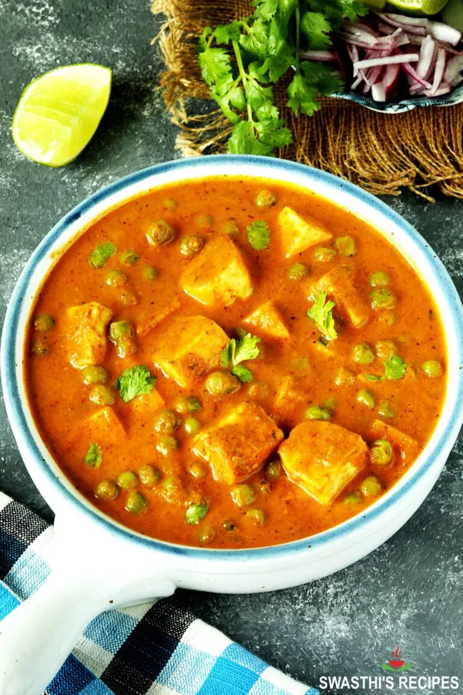
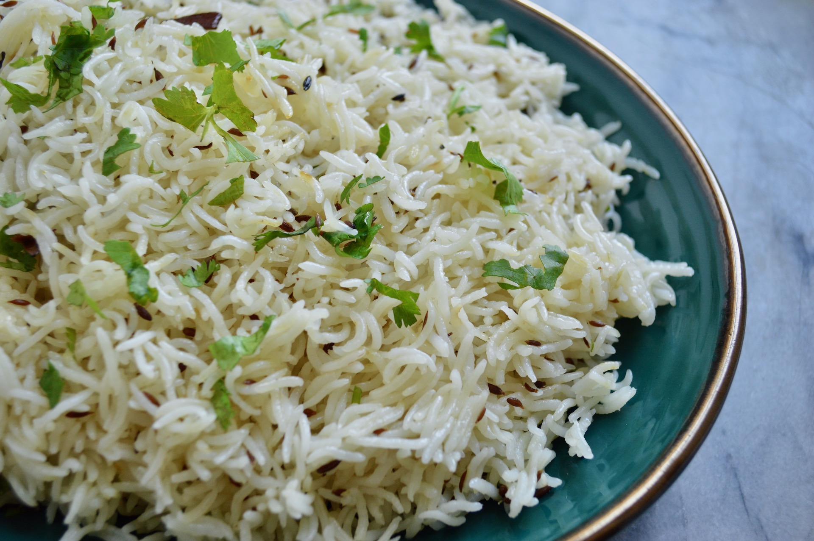
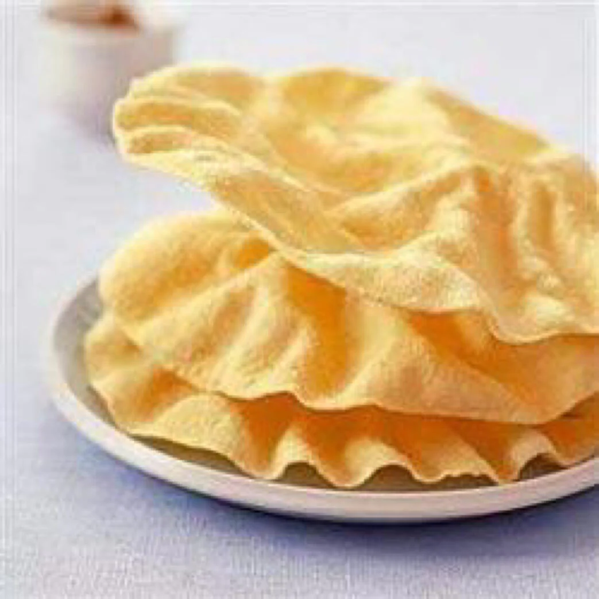

Matar Paneer
Matar Paneer is a delicious savory north indian dish. It has Paneer cheese - made from cow milk, green peas, and a sauce made from cashews and spices.
It is typically served with rice and/or naan. But I like to use Methi Paratha instead of Naan because I enjoy the texture of this spiced-flavored flaky flatbread I taste when eating this dish

Methi Paratha
Here is what the dish is made of:
Ingredients to Saute then Puree
- 1 tablespoon oil bv
- 1 to 2 green cardamoms (optional
- 3 garlic cloves (minced)
- 1 inch ginger (minced)
- 1 cup onions (cubed)
- 1.5 to 1.75 cups chopped tomatoes
Ingredients for Gravy
- 1.5 tablespoon oil or ghee
- 1 inch cinnamon (optional)
- 1 small bay leaf
- 1/4 teaspoon turmeric
- 1 teaspoon red chili powder
- 1.5 to 1.75 teaspoon coriander powder
- 1 teaspoon sugar
- 1 cup green peas
- 1 green chili
- 250 grams paneer
- 1 teaspoon kasoori methi (dried fenugreek)
- 1/4 teaspoon salt
- 2 tablespoon coriander leaves (cilantro)
- 3 to 4 tablespoon cream
Preparation
- If using store bought paneer/tofu, soak it in a bowl of hot water for 20 mins. Dran the water and use. This helps to soften the paneer
- Pour oil to a hot pan. When the oil turns hot, add green cardamoms, 1 tablespoon minced garlic, and 1 tablespoon minced ginger
- Fry for a minute. Next add chopped onions & saute until they turn light golden. 1 cup onions.
- Add tomatoes and salt. 1.5 to 1.75 cups tomatoes, 1/2 teaspoon salt
- Saute for 2 to 3 mins. Add cashews. Cook covered until soft & mushy.
- Cool this completely. Add to a grinder along with plain yogurt and make a smooth puree. (1/4 to 1/3 cup yogurt)
How To Make Matar Paneer
- Heat oil in the same pan. Add cinnamon bay leaf, let sizzle in oil for a minute.
- Lower the heat and add turmeric, chili powder, sugar (optional), garam masala and coriander powder. Mix well.
- Pour the pureed onion tomato mixture. If your puree is not smooth, then pass it through a filter/sieve.
- Saute until the masala comes together and turns thick. Keep stirring to prevent burning.
- Next add green peas. Pour water. If using fresh peas, boil them until tender in a pot, drain and use. If using frozen peas, then you can rinse and use.
- Mix well to make a thick gravy. Add more water if needed.
- Mix and cook covered on a medium heat until the gravy thickens and traces of oil appear over the gravy.
- Crush kasoori methi in your palm & sprinkle all over. Mix well.
- Check salt and add more if needed. Add green chili & cubed paneer.
- Cover and cook just for 2 mins. Sprinkle coriander leaves and cream.
- Stir well. Serve matar with Basmati rice, jeera rice, or methi paratha
- When having the curry with rice, you can also add some Appalam (A deep fried cracker made of gram flour) to give the meal a crunchy taste!
Matar Paneer

Methi Paratha

Jeera Rice
Appalam
